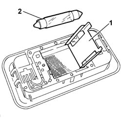

7040E80 COURTESY LIGHT BULB - R.R.
- Path
- Procedures > 70 FITTINGS > 7040 BODYSHELL INTERIOR TRIMS AND FITTINGS > 7040E interior courtesy light system > 7040E80 COURTESY LIGHT BULB - R.R.
- Kind
- repair procedure (removal / refitting; the operation number is the code)
- Applies to
- all engines; all production periods
- Interactive page
- https://sloeber94.github.io/elrnDB-fPnd/en/#/2753203
Applies to: all engines; all production periods
 Removing
Removing
 Refitting
RefittingDisconnect the battery negative terminal.
7040E10 front courtesy light - r+r
1. Open the lid.
2. Remove the bulb.

Applies to: all engines; all production periods
Refitting
RemovingPlace the bulb in position.
Close the lid.
7040E10 front courtesy light - r+r
Connect the battery negative terminal.